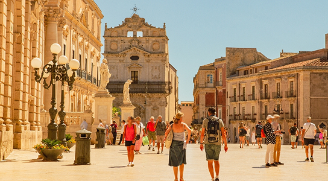
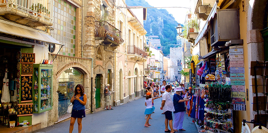
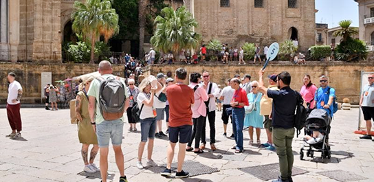
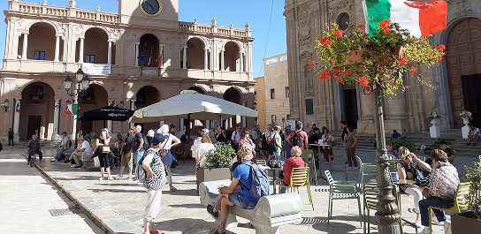

About
chi siamo
Pietre Sicule è un progetto editoriale digitale nato d all’amore per la Sicilia e per le sue piazze, autentici cuori pulsanti di ogni città e borgo dell’isola. Siamo un team di appassionati di storia, cultura e tradizioni popolari che ha scelto di raccontare, attraverso articoli approfonditi e ricercati, le storie custodite nelle pietre, nei monumenti e nei racconti tramandati di generazione in generazione. Crediamo che ogni piazza sia molto più di uno spazio urbano: è un luogo di incontri, di memoria collettiva e di identità condivisa.

la nostra storia
Pietre Sicule nasce dal desiderio di valorizzare il patrimonio culturale siciliano partendo dai suoi luoghi simbolo: le piazze. L’idea prende forma a Catania, città ricca di storia e stratificazioni culturali, dove il contrasto tra pietra lavica e architetture barocche racconta secoli di vita e trasformazioni. Da un progetto iniziale dedicato a poche realtà locali, siamo cresciuti fino ad ampliare lo sguardo verso tutta la Sicilia, raccogliendo testimonianze, curiosità storiche e tradizioni popolari che rendono unica ogni comunità.


obiettivi
Il nostro obiettivo è promuovere e preservare la memoria storica delle piazze siciliane, offrendo contenuti accurati, coinvolgenti e accessibili a tutti. Vogliamo far conoscere le radici culturali dell’isola, valorizzare le tradizioni locali e stimolare un turismo consapevole, capace di andare oltre le mete più note. Attraverso il nostro lavoro, aspiriamo a creare un archivio digitale che diventi punto di riferimento per studiosi, viaggiatori e per chiunque desideri riscoprire l’anima autentica della Sicilia.

la nostra sede
La redazione di Pietre Sicule ha sede a Catania, città dinamica e profondamente legata alla propria storia. Da qui coordiniamo le ricerche, le interviste e la pubblicazione degli articoli, mantenendo un legame diretto con il territorio e con le comunità che raccontiamo. Essere a Catania significa vivere quotidianamente quella dimensione di piazza che ispira il nostro progetto: uno spazio aperto, vivo e ricco di storie che meritano di essere ascoltate e condivise